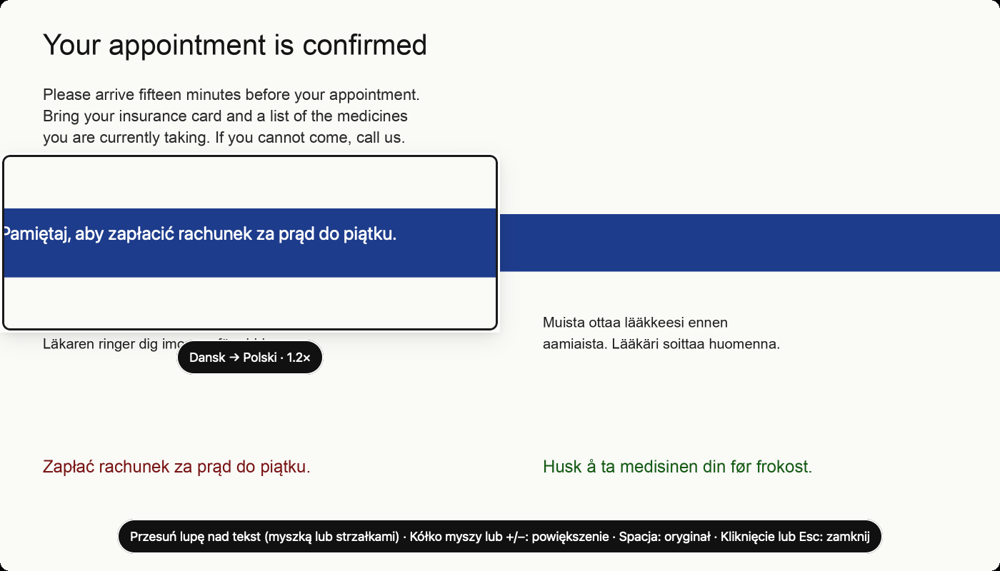
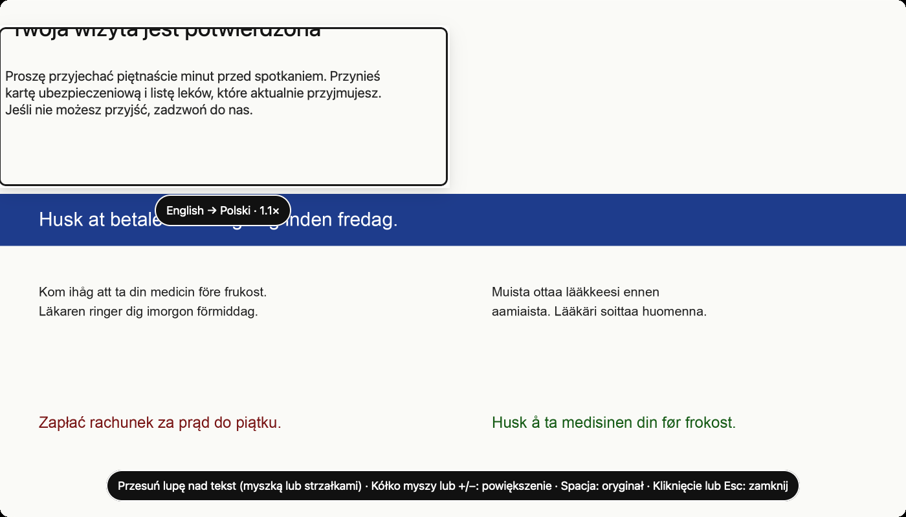
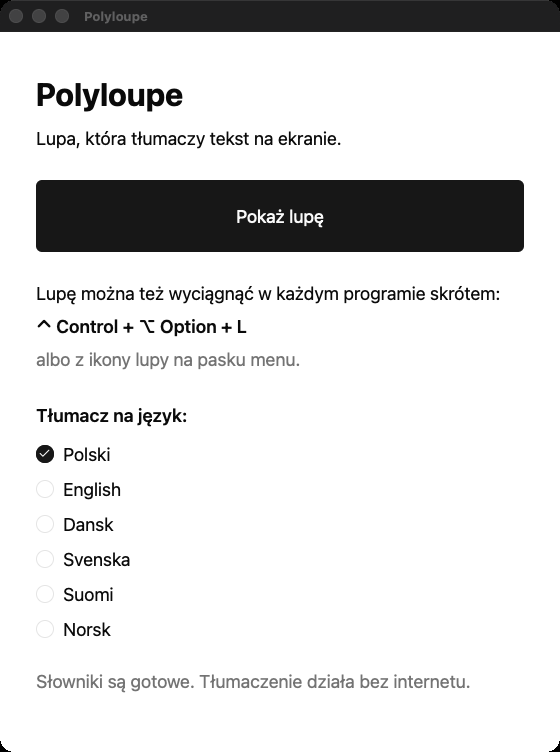

A magnifying glass that translates your screen.
Hold it over any text and read it in your own language — right where it was, in the same colours. Made for older people: nothing to select, copy or remember.
Early prototype — works on macOS today, Windows and Linux are on the way.

As simple as a real magnifying glass
No menus to learn. Three steps that feel natural from the first try.
-
Take it out
Press the big button, click the loupe icon in the menu bar, or press Ctrl Alt L in any app.
-
Hover over text
The text under the glass is already translated, in place. Turn the scroll wheel to make it bigger.
-
Put it away
Click anywhere or press Esc. You are right back where you were.
Why Polyloupe
Built for people who just want to read what is on the screen.
Private by design
Translation runs on your own computer with Mozilla's Firefox Translations models. Bank statements and letters never leave your device.
Six languages, any pair
Language is detected automatically.
- Polski
- English
- Dansk
- Svenska
- Suomi
- Norsk
Made for older eyes
Large controls, high contrast following WCAG 2.1 AA, and full keyboard control — arrows move the loupe, + and − zoom.
Free and open source
No accounts, no subscriptions. MIT or Apache-2.0, written in Rust with GPUI Kit.
Whole paragraphs, not word salad
Lines are joined into paragraphs before translating, so sentences keep their meaning — and the translation fits where the original was.


Get started
Ready-to-install downloads are coming. Until then, you can build Polyloupe from source with Rust. On first start it downloads the dictionaries (about 25 MB per language) — after that it works without the internet.
Build instructions# macOS (Windows and Linux: work in progress)
git clone https://github.com/wooboo/polyloupe
cd polyloupe
cargo run --release